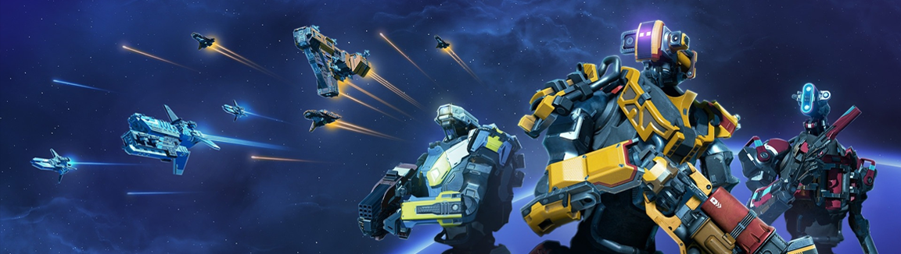

Starbase
My Role in Starbase:
During my involvement with the game Starbase, I focused on enhancing the player's experience, specifically in the realm of moon base construction. My contributions revolved around improving the tools available to players for constructing moon base structures, with a particular emphasis on quality of life features.
Easy Build Mode Enhancement:
One of the significant aspects I worked on was the Easy Build Mode, a feature designed to streamline the construction process. In this mode, I implemented improvements to highlight when certain parts could be built or not, providing players with better visual cues and a more intuitive building experience. Additionally, I introduced a valuable feature that allowed players to place identical parts in a straight line without the need to manually place each individual part. This feature simplified the construction process, making it more efficient and enjoyable for players.
Structure Degradation Mechanics:
A substantial portion of my efforts was dedicated to the moon base construction system, which plays a role in the Playable Test Universe (PTU). Here, I focused on implementing "structure degradation mechanics," a feature that introduced realism and challenge to the gameplay. With this system, unsupported pieces within loaded base build areas gradually degraded over time, adding a layer of complexity and strategic planning to the construction process.
My time working on Starbase allowed me to contribute to the game's overall improvement, providing players with a more immersive and engaging moon base construction experience, as well as introducing challenging mechanics to the PTU.